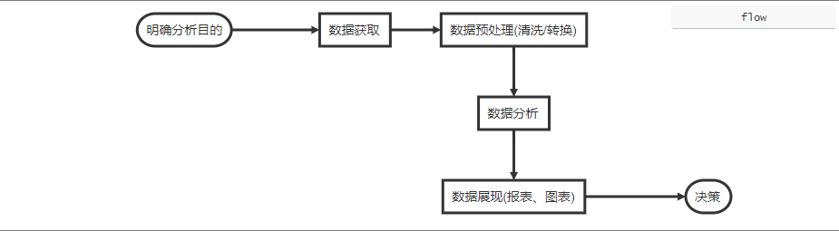

Python数据分析简介&环境准备
1 概览
-
数据分析定义：数据分析是指用适当的统计分析方法对收集来的大量数据进行分析，提取有用信息和形成结论而对数据加以详细研究和概括总结的过程。
-
思维导图
-
数据分析完整流程：
start=>start: 明确分析目的 fetch=>operation: 数据获取 pre_oper=>operation: 数据预处理(清洗/转换) analyze=>operation: 数据分析 show=>operation: 数据展现(报表、图表) report=>end: 决策 start(right)->fetch(right)->pre_oper->analyze->show(right)->report
-
相关领域：数据挖掘、深度学习（机器学习)、人工智能等
-
职业发展：算法工程师、数据分析员(师)、数据产品经理、ETL工程师、数据挖掘工程师；数据科学家等
准备工作
课程使用anaconda作为实验环境。Anaconda是一个开源的Python发行版本，其包含了conda、Python等180多个科学包及其依赖项。先下载Anaconda安装包。推荐跟随Anaconda下载页面的Windows安装指导,;确认设置是否正确方法：打开命令行窗口（cmd.exe），输入python以打开Python解释器。可以看到类似下面的Anaconda版本的输出：
C:\Users\wesm>python
Python 3.5.2 |Anaconda 4.1.1 (64-bit)| (default, Jul 5 2016, 11:41:13)
[MSC v.1900 64 bit (AMD64)] on win32
>>>
要退出shell，按Ctrl-D（Linux或macOS上），Ctrl-Z（Windows上），或输入命令exit()，再按Enter。
我们主要使用jupyter-notebook编写代码。
jupyter notebook起始目录修改方法
- 打开anaconda SHELL，输入命令
jupyter notebook --generate-config，将生成 jupyter_notebook_config.py文件 - 打开上一步生成的文件:
C:\Users\liudx\.jupyter\jupyter_notebook_config.py,找到c.NotebookApp.notebook_dir前面的“#”符号（#表示注释的意思）,修改为起始目录 - **重启jupyter notebook **
3 resources
1. 公开数据源#参考#
UCI：加州大学欧文分校开放的经典数据集，被很多机器学习实验室采用。经典且古老的机器学习、数据挖掘数据集，包含分类、聚类、回归等问题下的多个数据集。 国家数据：数据来源于中国国家统计局，包含了我国经济民生等多个方面的数据。 CEIC：超过128个国家的经济数据，能够精确查找GDP、CPI、进出口以及国际利率等深度数据。 中国统计信息网：国家统计局的官方网站，汇集了海量的全国各级政府各年度的国民经济和社会发展统计信息。 政务数据网站：现在各个省都在很大程度上地开放政务数据，比如北京、上海、广东、贵州等等，都有专门的数据开放网站，搜索比如“北京政务数据开放”。
2.学习资源
-
《Python数据分析》 :star::star::star::star::star:
-
朱卫军zhihu专栏: 汇总各种学习资源。:star::star::star:
-
廖雪峰Python教程:python基础教程，比较实用:star::star::star:
-
Numpy官方文档CN: 这是NumPy官方的中文文档，NumPy是用Python进行科学计算的基础软件包。
-
Matplotlib官方文档cn:Matplotlib中文网、Matplotlib官方中文文档。
-
莫烦 Python 教程: 包括数据分析大部分内容，视频教程
-
Pandas官方文档cn:Pandas中文网、Pandas官方中文文档。